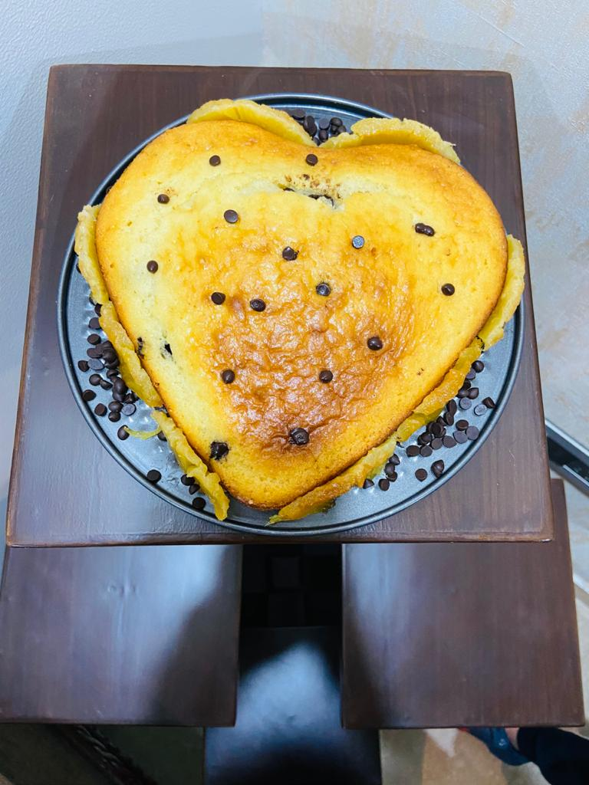

INGREDIENTS:-
1cup maida/all purpose flour
1/2 cup granulated sugar
1/2 cup curd
1/4th cup milk powder
1/4th cup melted butter
1/4th cup milk
1 teaspoon baking powder
1/4th teaspoon baking soda
1/4th cup choclate chips
Pineapple essence (4-5 drops)
RECIPE:-

Pour the butter in the bowl and add curd.
Add the sugar in the mixture and mix well.
Sieve the maida ,milk powder, baking soda and baking powder into the mixture.
Mix the mixture well with a balloon whisk .
Now gradually add the milk to the mixture to get the perfect consistency.
Now add the chocolate chips to the mix .
Preheat the oven for about 10 minutes on 180 degree celcius.
place the mixture into the oven for about 15 minutes.
Voila! Your cake is ready.